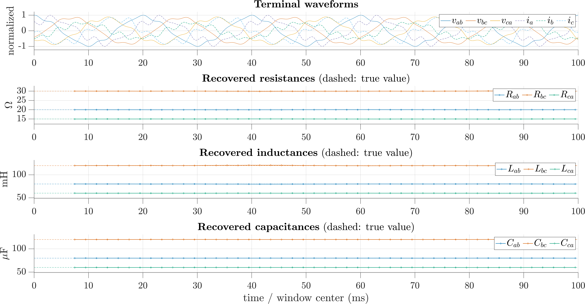
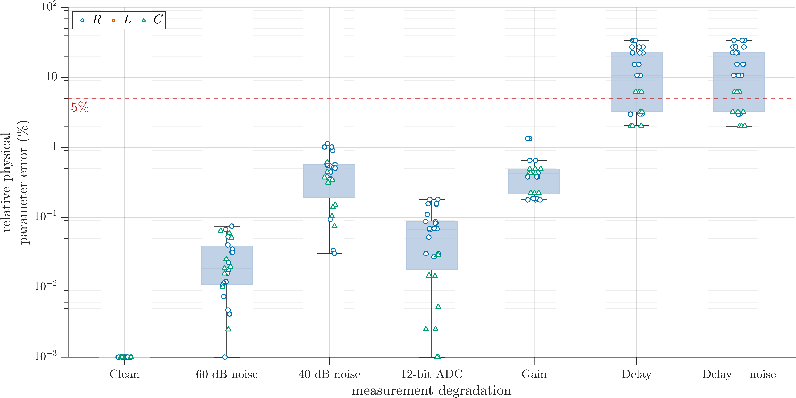
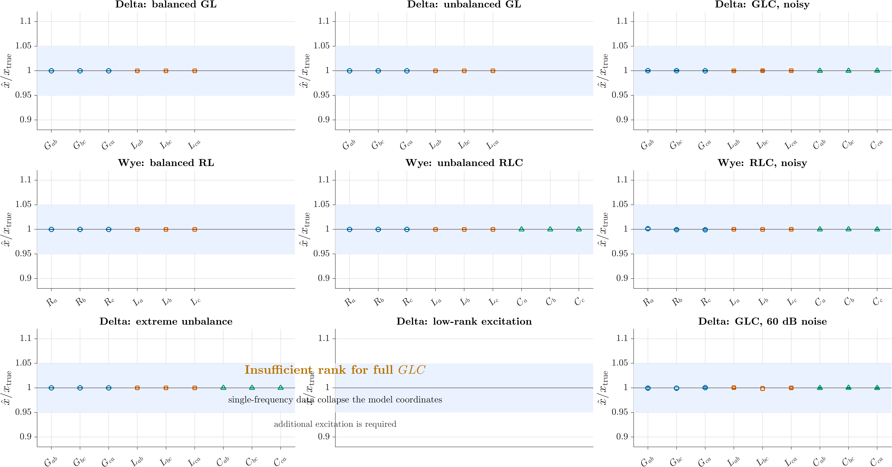

Geometric formulation
Signals are interpreted as trajectories. Candidate equivalents are accepted only when the trajectory carries enough independent information for the model family.
Geometry of electrical measurements
SPACOR studies voltage and current records as trajectories in Euclidean spaces. The goal is to recover passive load equivalents directly from measured time-domain geometry, with explicit tests for identifiability, passivity, Kirchhoff consistency, and energy admissibility.
The original 2021 work introduced a single-phase geometric construction for identifying physical equivalent parameters from terminal voltage and current. The current public release keeps that historical material separate and adds a sampled-data implementation: finite observation windows, matrix estimators, harmonic projection for derivatives and primitives, rank and conditioning diagnostics, and degradation campaigns.
Signals are interpreted as trajectories. Candidate equivalents are accepted only when the trajectory carries enough independent information for the model family.
The continuous-time formulas are implemented through finite windows, normalized regression matrices, harmonic derivatives, and robust residual tests.
A numerical fit is not enough. The recovered elements must close the terminal energy balance implied by resistors, inductors, and capacitors.
The active three-phase work focuses on three- and four-wire load equivalents. The most demanding case is the three-wire system, where the neutral is not measured and the directly identifiable families must be selected with care. Delta parallel and wye series equivalents are treated as the central physically interpretable families.

The site collects the figures that do not fit comfortably in the paper: parameter recovery, degradation studies, window diagnostics, and human readable waveform-plus-parameter plots. These figures are generated from synthetic reproducibility campaigns; no private measurement data are included.


The public MATLAB repository contains synthetic fixtures, campaign scripts, regression tests, and the current public API. Large generated results and private measurements are intentionally excluded from Git.
git clone https://github.com/paketecuen/SPACOR.git
cd SPACOR
% In MATLAB
startup_spacor
run_public_smoke
% Example campaigns
spacor.campaigns.run_threewire_quick()
spacor.campaigns.run_threewire_degradation()The real-data release policy is conservative: no private measurement data are shipped until consent, metadata, licensing, and integrity checks are ready.
The theoretical single-phase formulation was published in IEEE Transactions on Power Delivery in 2021. A three-phase identification manuscript is under preparation and uses this website as public extended material.
@article{montoya2021spacor,
author = {Montoya, Francisco G. and De Leon, Francisco and Arrabal-Campos, Francisco M. and Alcayde, Alfredo},
title = {Determination of Instantaneous Powers from a Novel Time-Domain Parameter Identification Method of Non-Linear Single-Phase Circuits},
journal = {IEEE Transactions on Power Delivery},
year = {2021},
doi = {10.1109/TPWRD.2021.3133069}
}